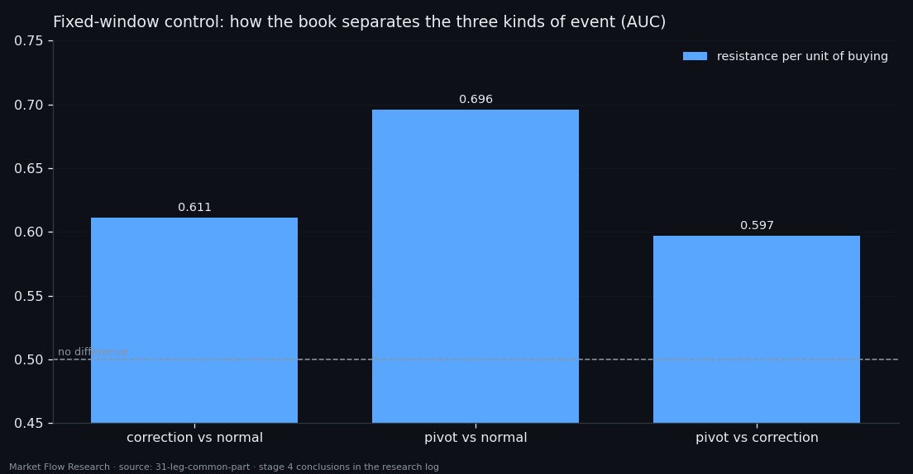
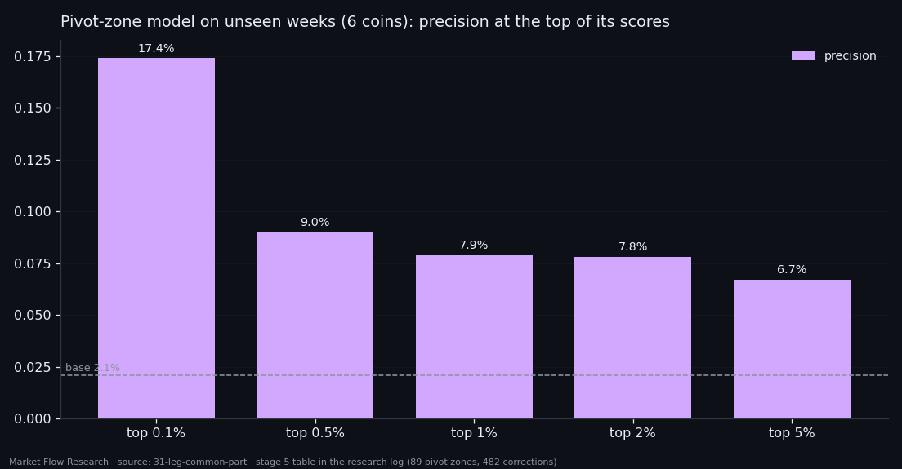

A Correction and a Reversal Are One Event of Different Strength — What the Book Shows Inside a Leg
Every leg of a zigzag holds its own common level in the order book, and removing it would make the unusual events stand out — if only it could be known in time. It cannot: the previous leg predicts it so poorly that subtracting it adds noise. What the book does show is a reversal zone of about 15 events with a clear signature — and the same signature, weaker, inside every correction. Normal event, correction, pivot: one axis. Models find the pivot zone at AUC 0.72–0.75 and put 8.5× the base rate in their most confident answers, but no memory, loss or penalty separates a pivot from a correction without breaking the correction channel.
① A common level — known only after the leg ends
Inside one leg the seven features of `210×10-1×7d/d` sit at a level different from the neighbouring leg's. That level is the same for every event of the leg, so it says nothing about any single event — it only hides the ones that stand out. The idea: subtract it and look at what is left. Two conditions: up and down legs measured separately (different regimes), and the subtracted base must be causal. A leg's own average knows everything that happened in it, so the base comes from the previous leg of the same direction, which ended before this one began. BTC, 70,647 events.
The common level is real: subtracting the leg's own mean removes up to 14% of the spread — support per unit of selling drops from 0.294 to 0.258 on up legs, resistance per unit of buying from 0.302 to 0.263. It is mostly the book levels; balances and price carry 1–6%.
It carries over the pivot only halfway (0.45–0.51 on up legs, 0.18–0.37 on down legs, zero in rank on some features). So the causal base adds spread instead of removing it: 0.294 → 0.303 on up legs, 0.282 → 0.294 on down legs. Subtracting a level you did not guess adds the guess's own error. Inside a leg the level drifts — neighbouring 5%-slices correlate at 0.53–0.82, the first and last slice at 0.02–0.22 — and the position repeats in the next leg of the same direction only weakly (0.22–0.30 up, near control down), more like a market regime than a memory. Six book features know nothing about the direction of the neighbouring leg (AUC 0.49–0.52, exactly the control); only the price derivative does (0.533), at the leg's edges.

② Normal, correction, pivot — one axis
Next, the zones themselves. A reversal zone is about 15 events (5.8 before, the pivot, 7.3 after) — some 53 minutes in which price moves 0.71%. A correction zone is shorter (11.4 events) and narrower (0.42%).
The reversal has a signature in the class, and it is not an artefact of how zones are cut. Resistance per unit of buying rises from 0.484 to 0.716 in rank; flow per resistance falls from 0.512 to 0.336. A fixed-window control gives the same (AUC 0.696 for the first, 0.338 for the second). The price derivative takes no part at all (0.499).
And a correction is the same signature, weaker. In the fixed-window control, correction against a normal event gives 0.611; pivot against a normal event, 0.696; pivot against correction, 0.597. The three kinds do not occupy different places — they sit on one axis: normal → correction → pivot. The event-level dissimilarity itself is small (+9.7% at the pivot, +1.8% at a correction), so any zone threshold must be relative to the leg, not fixed.

③ Models find the zone — not the difference
A three-class model (normal / correction zone / pivot zone), trained on six coins because BTC alone has only eight pivot zones in validation, reaches AUC 0.724 for the pivot zone with a causal window — slightly better than a centred one (0.718): everything it knows about a reversal, it knows from the past. Its most confident 0.1% of events contain 17.4% pivot-zone events against 2.1% base — ×8.5; at the top 1%, 7.9% (×3.9). By coin it ranges from 0.625 (XRP) to 0.750 (ETH), and BTC's top 1% contains only corrections.
A memory network over one, three, five legs or the whole series adds a little (pivot zone 0.737–0.741, top 1% ×4.3) and nothing across memory lengths. An early version seemed to gain from longer memory (0.823) — that was the block boundaries coinciding with pivots, the network reading the way the data was sliced. Changing the output from softmax to independent channels helped the rare correction channel more than any memory (0.634 → 0.700).
The obstacle is not "reversal versus market" — normal events and corrections are well separated (AUC 0.869 and 0.816 on BTC) — but reversal versus correction. A penalty aimed exactly at that confusion drove it from 0.356 to 0.010 — and pushed the correction channel's AUC to 0.469, below chance. Every weight and loss with the penalty did the same; the widest network gave the best raw numbers (0.753 pivot, 0.717 correction). The data agree with stage 4: a correction and a pivot are not different events but one event of different strength, and the book at the moment cannot say how strong this one will turn out.

Reproduce this study
- Research log (.md, Ukrainian): goal, data, plan, scripts, every confirmed stage and table — enough to rerun the study
- Reproduction kit (.zip): the study's scripts, project rules and base scripts that build every class
If this changed how you read the tape, the natural next step is Volume Is the Fuel — Not the Steering Wheel — We recorded the Binance order book every second for six coins over five months and ran eighteen tests on what volume really does.
Volume Is the Fuel — Not the Steering Wheel
We recorded the Binance order book every second for six coins over five months and ran eighteen tests on what volume really does.
About Market Research Lab — What We Collect and Why
Most market commentary is storytelling.
From Calm to Calm: a Standard for What Counts as a Signal (BTC)
We stopped defining market signals with a stopwatch.
The Wall That Goes Quiet: What Resting Liquidity Predicts
We measured resting limit liquidity sitting on both sides of the book second by second across six coins, and asked the only question that matters:….
Comments
Discussion is powered by GitHub. Enable it by adding secrets/giscus.json (repo IDs from giscus.app).